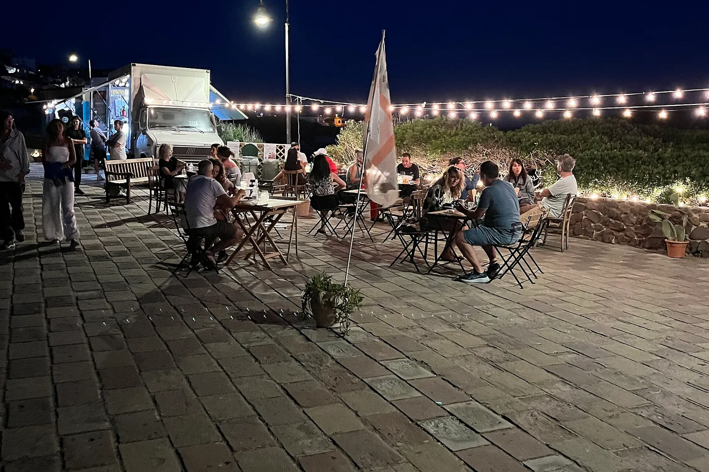

Find the truck
Fish soup, salmon, burgers and cinnamon buns from a small truck that moves around Mariehamn during the week. Order ahead on the menu, tell us when you come, and pick up at the hatch. Or just walk up and order there.
This week
Monday, October 12
By the guest harbour office. Fish soup until the pot is empty.
Tuesday, October 13
On the north side, next to the flower stall.
Wednesday, October 14
Same spot as Monday, by the guest harbour office.
Thursday, October 15
By the boat yard. Park on the gravel and walk the last bit.
Friday, October 16
Open into the evening for the late ferry. Last orders at the hatch at 19:45.
Saturday, October 17
Autumn market all day. There is a queue at lunch, so ordering ahead is quicker.
Sunday, October 18
No orders ahead on Sundays. Come to the hatch and we cook while you wait.